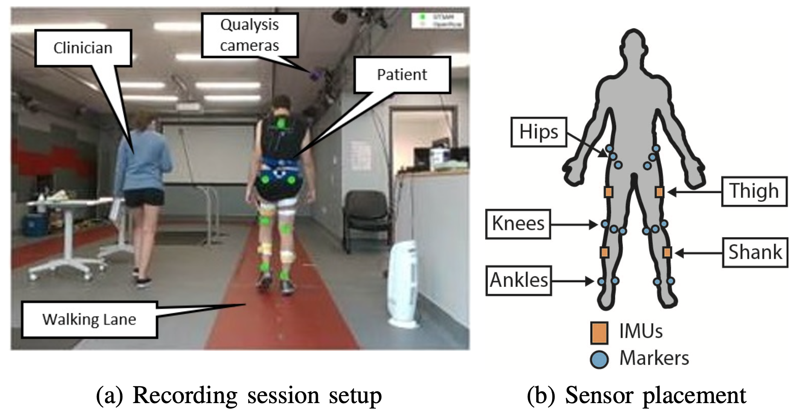

Zero-Velocity Update Kalman Filter for Foot Position
Graduate Research — Boston University, 2020-2022
I implemented a Kalman filter to track foot position during walking by integrating IMU acceleration. Integrating acceleration directly produces drift, so the filter uses zero-velocity updates (ZUPT) during stance phase to correct accumulated error. The measurement model simply checks if the predicted velocity is zero when the foot contacts the ground.

IMU sensor placement for foot tracking during gait
Problem Setup
The state is position and velocity in one dimension:
During swing phase, only the predict step runs and uncertainty grows. During stance, the zero-velocity constraint corrects both velocity and position through the covariance structure.
Process Model
The state evolves according to standard equations of motion. Given previous state \(\mathbf{x}_{k-1}\) and IMU acceleration \(a_k\):
where
The state transition matrix \(\mathbf{F}\) propagates position and velocity forward in time. The input matrix \(\mathbf{G}\) applies the measured acceleration to update the state.
Covariance Prediction
Uncertainty grows with each prediction:
\(\mathbf{Q}\) is the process noise covariance representing IMU noise and model error. The term \(\mathbf{F}\mathbf{P}_{k-1}\mathbf{F}^T\) propagates existing uncertainty through the linear transformation (analogous to \(w\Sigma w^T\) in portfolio optimization).
Measurement Model
The measurement model extracts velocity from the state:
Multiplying the state by \(\mathbf{H}\) gives the predicted velocity:
During stance, the actual measurement is zero (ZUPT assumption: foot velocity = 0). The residual is:
Kalman Gain and Update
The Kalman gain determines how much the state should move in response to the measurement residual:
\(R\) is the measurement noise covariance (a scalar for ZUPT, typically \(R = 0.01\)). The Kalman gain represents the covariance between the state and measurement, scaled by measurement uncertainty. It tells each state component how much to adjust when the residual is applied.
State update:
Covariance update:
How It Works
The filter alternates between two phases:
- Swing phase: Only the predict step runs. Position and velocity are updated via equations of motion, and \(\mathbf{P}_k\) grows as drift accumulates.
- Stance phase: The zero-velocity update triggers. The residual \(y_k = -v_k^-\) corrects both velocity directly and position indirectly through the cross-covariance in \(\mathbf{P}_k\).
After many gait cycles, \(\mathbf{P}_k\) converges to a repeating pattern reflecting typical uncertainty levels during each phase. The measurement noise \(R\) determines how much to trust the ZUPT (low \(R\) means strong trust). The process noise \(\mathbf{Q}\) controls how quickly uncertainty grows during swing.
Steady-State Covariance via Lyapunov Equation
The ZUPT measurement updates cause the covariance matrix \(\mathbf{P}_k\) to converge to a steady-state value. Rather than simulating many gait cycles to observe convergence, we can solve for this steady state directly using the discrete-time algebraic Riccati equation (DARE), which is a form of Lyapunov equation.
Why Convergence Occurs
During each gait cycle, two competing processes act on the covariance:
- Predict step: Uncertainty grows as \(\mathbf{P}_k^- = \mathbf{F}\mathbf{P}_{k-1}\mathbf{F}^T + \mathbf{Q}\)
- Update step (ZUPT): Uncertainty shrinks as \(\mathbf{P}_k = (\mathbf{I} - \mathbf{K}_k\mathbf{H})\mathbf{P}_k^-\)
After many cycles, these effects balance out and \(\mathbf{P}_k\) reaches a fixed point \(\bar{\mathbf{P}}\) where the growth during prediction equals the reduction during measurement update. This steady-state covariance tells you the long-term accuracy of your position and velocity estimates.
The Discrete Algebraic Riccati Equation (DARE)
For a time-invariant Kalman filter (constant \(\mathbf{F}, \mathbf{G}, \mathbf{H}, \mathbf{Q}, R\)), the steady-state covariance \(\bar{\mathbf{P}}\) satisfies:
This is a quadratic matrix equation. It encodes the condition that after one full predict-update cycle, the covariance returns to itself.
Breaking Down the DARE
Let's parse each term:
- \(\mathbf{F}\bar{\mathbf{P}}\mathbf{F}^T\): Propagates steady-state uncertainty through state transition
- \(\mathbf{Q}\): Adds process noise (IMU drift, model error)
- \(\mathbf{F}\bar{\mathbf{P}}\mathbf{H}^T(\mathbf{H}\bar{\mathbf{P}}\mathbf{H}^T + R)^{-1}\mathbf{H}\bar{\mathbf{P}}\mathbf{F}^T\): Subtracts the information gain from the measurement update
The third term is the key: it quantifies how much uncertainty the ZUPT removes. When \(R\) is small (you trust the zero-velocity measurement), this term is large and \(\bar{\mathbf{P}}\) is small (high accuracy). When \(\mathbf{Q}\) is large (high process noise), \(\bar{\mathbf{P}}\) increases because drift accumulates faster than measurements can correct it.
Interpretation for ZUPT
In the ZUPT context, the measurement model is \(\mathbf{H} = [0 \quad 1]\), which observes velocity. The DARE tells us:
- Velocity uncertainty \(\bar{P}_{22}\) converges to a value balancing process noise against measurement updates
- Position uncertainty \(\bar{P}_{11}\) converges based on how well velocity corrections propagate through \(\mathbf{F}\)
- Cross-covariance \(\bar{P}_{12}\) captures the correlation between position and velocity errors at steady state
The cross-covariance term is critical: even though we only measure velocity (via ZUPT), the off-diagonal element \(\bar{P}_{12}\) allows the Kalman gain \(\mathbf{K}_k\) to correct position errors whenever velocity is updated. This is why ZUPT works—the position and velocity errors are coupled through the dynamics \(\mathbf{F}\).
Solving the DARE
For our 2×2 system, the DARE can be solved:
- Analytically: Expand into scalar equations and solve the resulting polynomial (messy but exact)
- Numerically: Use iterative methods or built-in solvers (e.g.,
scipy.linalg.solve_discrete_arein Python) - Simulation: Run the filter for many cycles until \(\mathbf{P}_k\) stops changing
Example Steady-State Result
Suppose \(\Delta t = 0.01\) s, \(\mathbf{Q} = \begin{bmatrix} 10^{-6} & 0 \\ 0 & 10^{-4} \end{bmatrix}\), and \(R = 0.01\). After solving the DARE, you might find:
This tells you:
- Position uncertainty: \(\sigma_x = \sqrt{\bar{P}_{11}} \approx 1.5\) cm
- Velocity uncertainty: \(\sigma_v = \sqrt{\bar{P}_{22}} \approx 9.3\) cm/s
- Positive correlation between position and velocity errors (expected from \(\mathbf{F}\))
Knowing \(\bar{\mathbf{P}}\) ahead of time lets you:
- Initialize \(\mathbf{P}_0 = \bar{\mathbf{P}}\) to skip the transient convergence phase
- Tune \(\mathbf{Q}\) and \(R\) to achieve desired steady-state accuracy before running the filter
- Compute the steady-state Kalman gain \(\bar{\mathbf{K}} = \bar{\mathbf{P}}\mathbf{H}^T(\mathbf{H}\bar{\mathbf{P}}\mathbf{H}^T + R)^{-1}\) and use a time-invariant filter for efficiency
Key Parameters
- Process noise covariance \(\mathbf{Q}\): Accounts for IMU noise and integration drift
- Measurement noise covariance \(R\): Reflects confidence in zero-velocity assumption (typically 0.01)
- Initial state covariance \(\mathbf{P}_0\): Can be set to \(\bar{\mathbf{P}}\) from DARE solution to avoid transient
By tuning \(R\) to be small relative to \(\mathbf{Q}\), the filter trusts the stance-phase measurements heavily, which is appropriate since the foot truly has zero velocity during ground contact.